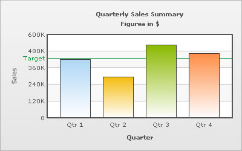
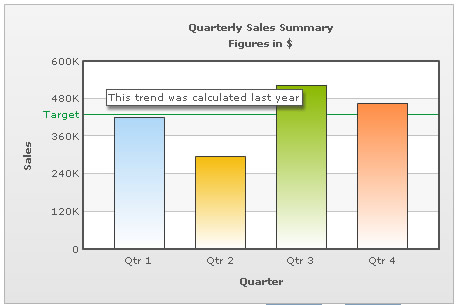
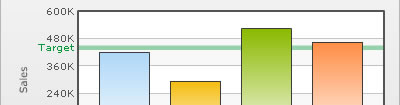

XML Attributes for Trend lines & Zones |
||||||||||||
| Trend lines are horizontal/vertical lines spanning the chart canvas which aid in interpretation of data with respect to some pre-determined value. For example, when you are plotting the quarterly revenue of a company, you might want to show what the target revenue was. | ||||||||||||
|  | ||||||||||||
| The XML going into the above is: | ||||||||||||
<chart caption='Quarterly Sales Summary' subcaption='Figures in $' xAxisName='Quarter' yAxisName='Sales' showValues='0'> <trendLines> |
||||||||||||
| The trend line is plotted at the value which you have specified. If the value specified is not within the chart limits, then the trend line is not plotted at all. | ||||||||||||
| Adding tool-text to trendlines | ||||||||||||
| The trendlines can also show tool-text when hovered over. To specify a custom tool-text for trend-line, the following XML can be used: | ||||||||||||
<chart caption='Quarterly Sales Summary' subcaption='Figures in $' xAxisName='Quarter' yAxisName='Sales' showValues='0'> <trendLines> |
||||||||||||
| This results in: | ||||||||||||
|  | ||||||||||||
| Trend zones | ||||||||||||
| Trend zones are similar to trend lines except that they mark out an entire zone rather than just a line. | ||||||||||||
|  | ||||||||||||
| For a trend zone, the XML would be as under: | ||||||||||||
<trendLines> |
||||||||||||
| Note that for converting a trend line into a trend zone, all we have to do is add an end value and set isTrendZone to 1. | ||||||||||||
| Customizing trend lines & zones | ||||||||||||
| The looks of the trend lines can be customized using the following attributes: | ||||||||||||
|
||||||||||||
| Slanted trend lines | ||||||||||||
| You can have slanted trend lines as well, i.e. trend line shaving a different starting & ending value. | ||||||||||||
| <line startValue='430000' endValue='450000' color='009933' displayvalue='Target' /> | ||||||||||||
| Value on Right | ||||||||||||
| You can show the trendline label to the right of the chart canvas by setting valueOnRight ='1'. | ||||||||||||
| <line startValue='430000' color='009933' displayvalue='Target' valueOnRight ='1'/> | ||||||||||||
| Dashed trend lines | ||||||||||||
| The trend lines can be made dashed by setting dashed='1'. The dash length and gap can be customized using dashLen & dashGap attributes respectively. | ||||||||||||
| <line startValue='430000' color='009933' displayvalue='Target' dashed='1' dashLen='2' dashGap='2' /> | ||||||||||||
| Animation using Styles | ||||||||||||
| Using Styles, we can animate the trend lines. Here, we will animate the x-scale & the alpha of the trend line. | ||||||||||||
<chart caption='Quarterly Sales Summary' subcaption='Figures in $' xAxisName='Quarter' yAxisName='Sales' showValues='0'> <trendLines> <styles> |
||||||||||||
| Trend lines in Dual-Y Axis Chart | ||||||||||||
| A dual y-axis chart has 2 y-axes. So when you are defining a trend line, you also need to define which axis the line has to be defined on. This can be done using the parentYAxis attribute. By default, the trend line shows up on the primary y-axis but if you want to show it on the secondary y-axis you have to configure the same by setting parentYAxis='S'. | ||||||||||||
| <line startValue='430000' color='009933' displayvalue='Target' parentYAxis='S' /> | ||||||||||||